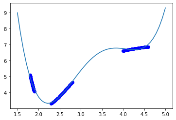
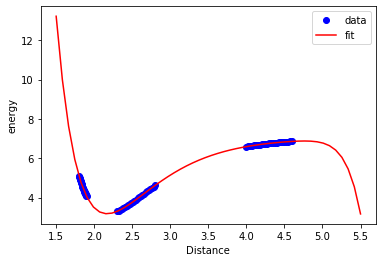

Table of Contents
1 Overview
Today we examine a few important ideas in data science and machine learning. They are:
- Data preprocessing. We mostly focus on how to scale data so that each feature has about the same scale.
- How to combine many data processing/fitting steps into a pipeline that is easy to work with
- How to use k-fold validation to make sure your model fit doesn't depend too much on one data set sample.
- Automating the optimization of model parameters using cross-validation.
2 Data preprocessing
When your features have varying orders of magnitude, it is often a good idea to standardize them. That makes each feature have a similar importance. Some algorithms even expect that the input features have been standardized (e.g. PCA, and many kinds of regularization). The two most common approaches are:
- zero-mean, unit variance
- You subtract the mean of each column, and normalize by the variance of the column
- min-max
- you scale the column so that the minimum value maps to a constant (often 0 or -1), and the maximum value maps to a constant (often 1).
sklearn provides a preprocessing module to make this "simple".
We will explore this with this data set which represents the energy of a Cu dimer as a function of the distance between the two atoms. Our goal is to develop a model that fits this. We know some physics about this system, and that is as the atoms approach each other, they should strongly repel each other, and the energy would go to infinity, and as the atoms get far apart, they cannot interact, so the energy should go to a constant. You might think the energy should go to zero,, but this depends on what reference system the energy zero is defined for. The zero in this system is defined as the minimum energy for bulk Cu in an fcc unit cell. So, this system levels out at an energy that is much higher than that.
import json with open('data.json') as f: data = json.load(f) %matplotlib inline import matplotlib.pyplot as plt plt.plot(data['distance'], data['energy'], 'bo') plt.xlabel('distance') plt.ylabel('energy')
Text(0, 0.5, 'energy')
<Figure size 432x288 with 1 Axes>

First, let's make some columns. Instead of manually creating these, let's leverage the capability of sklearn to build the features for us. Here is an example of a second order polynomial.
X = np.array([data['distance']]).T from sklearn.preprocessing import PolynomialFeatures poly = PolynomialFeatures(2) poly.fit_transform(X)
array([[ 1. , 1.8 , 3.24 ],
[ 1. , 1.80416667, 3.25501736],
[ 1. , 1.80833333, 3.27006944],
[ 1. , 1.8125 , 3.28515625],
[ 1. , 1.81666667, 3.30027778],
[ 1. , 1.82083333, 3.31543403],
[ 1. , 1.825 , 3.330625 ],
[ 1. , 1.82916667, 3.34585069],
[ 1. , 1.83333333, 3.36111111],
[ 1. , 1.8375 , 3.37640625],
[ 1. , 1.84166667, 3.39173611],
[ 1. , 1.84583333, 3.40710069],
[ 1. , 1.85 , 3.4225 ],
[ 1. , 1.85416667, 3.43793403],
[ 1. , 1.85833333, 3.45340278],
[ 1. , 1.8625 , 3.46890625],
[ 1. , 1.86666667, 3.48444444],
[ 1. , 1.87083333, 3.50001736],
[ 1. , 1.875 , 3.515625 ],
[ 1. , 1.87916667, 3.53126736],
[ 1. , 1.88333333, 3.54694444],
[ 1. , 1.8875 , 3.56265625],
[ 1. , 1.89166667, 3.57840278],
[ 1. , 1.89583333, 3.59418403],
[ 1. , 1.9 , 3.61 ],
[ 1. , 2.3 , 5.29 ],
[ 1. , 2.32083333, 5.38626736],
[ 1. , 2.34166667, 5.48340278],
[ 1. , 2.3625 , 5.58140625],
[ 1. , 2.38333333, 5.68027778],
[ 1. , 2.40416667, 5.78001736],
[ 1. , 2.425 , 5.880625 ],
[ 1. , 2.44583333, 5.98210069],
[ 1. , 2.46666667, 6.08444444],
[ 1. , 2.4875 , 6.18765625],
[ 1. , 2.50833333, 6.29173611],
[ 1. , 2.52916667, 6.39668403],
[ 1. , 2.55 , 6.5025 ],
[ 1. , 2.57083333, 6.60918403],
[ 1. , 2.59166667, 6.71673611],
[ 1. , 2.6125 , 6.82515625],
[ 1. , 2.63333333, 6.93444444],
[ 1. , 2.65416667, 7.04460069],
[ 1. , 2.675 , 7.155625 ],
[ 1. , 2.69583333, 7.26751736],
[ 1. , 2.71666667, 7.38027778],
[ 1. , 2.7375 , 7.49390625],
[ 1. , 2.75833333, 7.60840278],
[ 1. , 2.77916667, 7.72376736],
[ 1. , 2.8 , 7.84 ],
[ 1. , 4. , 16. ],
[ 1. , 4.025 , 16.200625 ],
[ 1. , 4.05 , 16.4025 ],
[ 1. , 4.075 , 16.605625 ],
[ 1. , 4.1 , 16.81 ],
[ 1. , 4.125 , 17.015625 ],
[ 1. , 4.15 , 17.2225 ],
[ 1. , 4.175 , 17.430625 ],
[ 1. , 4.2 , 17.64 ],
[ 1. , 4.225 , 17.850625 ],
[ 1. , 4.25 , 18.0625 ],
[ 1. , 4.275 , 18.275625 ],
[ 1. , 4.3 , 18.49 ],
[ 1. , 4.325 , 18.705625 ],
[ 1. , 4.35 , 18.9225 ],
[ 1. , 4.375 , 19.140625 ],
[ 1. , 4.4 , 19.36 ],
[ 1. , 4.425 , 19.580625 ],
[ 1. , 4.45 , 19.8025 ],
[ 1. , 4.475 , 20.025625 ],
[ 1. , 4.5 , 20.25 ],
[ 1. , 4.525 , 20.475625 ],
[ 1. , 4.55 , 20.7025 ],
[ 1. , 4.575 , 20.930625 ],
[ 1. , 4.6 , 21.16 ]])
You can see that there are some orders of magnitude variation across the columns. We can use standard methods in sklearn to scale these features. This is the zero-mean and unit-variance approach.
from sklearn import preprocessing X_scaled = preprocessing.scale(poly.fit_transform(X)) X_scaled
array([[ 0. , -1.05831672, -0.94881821],
[ 0. , -1.05430795, -0.94653852],
[ 0. , -1.05029917, -0.94425357],
[ 0. , -1.0462904 , -0.94196335],
[ 0. , -1.04228162, -0.93966786],
[ 0. , -1.03827284, -0.93736709],
[ 0. , -1.03426407, -0.93506105],
[ 0. , -1.03025529, -0.93274975],
[ 0. , -1.02624652, -0.93043317],
[ 0. , -1.02223774, -0.92811132],
[ 0. , -1.01822897, -0.9257842 ],
[ 0. , -1.01422019, -0.92345181],
[ 0. , -1.01021142, -0.92111415],
[ 0. , -1.00620264, -0.91877122],
[ 0. , -1.00219387, -0.91642301],
[ 0. , -0.99818509, -0.91406954],
[ 0. , -0.99417631, -0.91171079],
[ 0. , -0.99016754, -0.90934678],
[ 0. , -0.98615876, -0.90697749],
[ 0. , -0.98214999, -0.90460293],
[ 0. , -0.97814121, -0.9022231 ],
[ 0. , -0.97413244, -0.899838 ],
[ 0. , -0.97012366, -0.89744763],
[ 0. , -0.96611489, -0.89505199],
[ 0. , -0.96210611, -0.89265108],
[ 0. , -0.57726367, -0.63762197],
[ 0. , -0.55721979, -0.62300829],
[ 0. , -0.53717591, -0.60826284],
[ 0. , -0.51713203, -0.59338561],
[ 0. , -0.49708816, -0.57837662],
[ 0. , -0.47704428, -0.56323584],
[ 0. , -0.4570004 , -0.5479633 ],
[ 0. , -0.43695653, -0.53255898],
[ 0. , -0.41691265, -0.51702289],
[ 0. , -0.39686877, -0.50135502],
[ 0. , -0.37682489, -0.48555538],
[ 0. , -0.35678102, -0.46962397],
[ 0. , -0.33673714, -0.45356078],
[ 0. , -0.31669326, -0.43736582],
[ 0. , -0.29664938, -0.42103909],
[ 0. , -0.27660551, -0.40458058],
[ 0. , -0.25656163, -0.3879903 ],
[ 0. , -0.23651775, -0.37126825],
[ 0. , -0.21647387, -0.35441442],
[ 0. , -0.19643 , -0.33742882],
[ 0. , -0.17638612, -0.32031145],
[ 0. , -0.15634224, -0.3030623 ],
[ 0. , -0.13629837, -0.28568138],
[ 0. , -0.11625449, -0.26816868],
[ 0. , -0.09621061, -0.25052421],
[ 0. , 1.05831672, 0.98818861],
[ 0. , 1.08236937, 1.01864409],
[ 0. , 1.10642203, 1.04928933],
[ 0. , 1.13047468, 1.08012432],
[ 0. , 1.15452733, 1.11114907],
[ 0. , 1.17857999, 1.14236357],
[ 0. , 1.20263264, 1.17376782],
[ 0. , 1.22668529, 1.20536183],
[ 0. , 1.25073794, 1.23714559],
[ 0. , 1.2747906 , 1.26911911],
[ 0. , 1.29884325, 1.30128238],
[ 0. , 1.3228959 , 1.3336354 ],
[ 0. , 1.34694855, 1.36617818],
[ 0. , 1.37100121, 1.39891071],
[ 0. , 1.39505386, 1.43183299],
[ 0. , 1.41910651, 1.46494503],
[ 0. , 1.44315917, 1.49824682],
[ 0. , 1.46721182, 1.53173837],
[ 0. , 1.49126447, 1.56541967],
[ 0. , 1.51531712, 1.59929072],
[ 0. , 1.53936978, 1.63335153],
[ 0. , 1.56342243, 1.66760209],
[ 0. , 1.58747508, 1.70204241],
[ 0. , 1.61152774, 1.73667248],
[ 0. , 1.63558039, 1.7714923 ]])
We can check that we get what we asked for:
X_scaled.mean(), X_scaled.std(axis=0)
(-6.315935428978668e-17, array([0., 1., 1.]))
We can also transform to min-max this way, the default here is to scale between 0 and 1.
minmax = preprocessing.MinMaxScaler()
minmax.fit_transform(poly.fit_transform(X))
array([[0.00000000e+00, 0.00000000e+00, 0.00000000e+00],
[0.00000000e+00, 1.48809524e-03, 8.38022383e-04],
[0.00000000e+00, 2.97619048e-03, 1.67798239e-03],
[0.00000000e+00, 4.46428571e-03, 2.51988002e-03],
[0.00000000e+00, 5.95238095e-03, 3.36371528e-03],
[0.00000000e+00, 7.44047619e-03, 4.20948816e-03],
[0.00000000e+00, 8.92857143e-03, 5.05719866e-03],
[0.00000000e+00, 1.04166667e-02, 5.90684679e-03],
[0.00000000e+00, 1.19047619e-02, 6.75843254e-03],
[0.00000000e+00, 1.33928571e-02, 7.61195592e-03],
[0.00000000e+00, 1.48809524e-02, 8.46741691e-03],
[0.00000000e+00, 1.63690476e-02, 9.32481554e-03],
[0.00000000e+00, 1.78571429e-02, 1.01841518e-02],
[0.00000000e+00, 1.93452381e-02, 1.10454257e-02],
[0.00000000e+00, 2.08333333e-02, 1.19086372e-02],
[0.00000000e+00, 2.23214286e-02, 1.27737863e-02],
[0.00000000e+00, 2.38095238e-02, 1.36408730e-02],
[0.00000000e+00, 2.52976190e-02, 1.45098974e-02],
[0.00000000e+00, 2.67857143e-02, 1.53808594e-02],
[0.00000000e+00, 2.82738095e-02, 1.62537590e-02],
[0.00000000e+00, 2.97619048e-02, 1.71285962e-02],
[0.00000000e+00, 3.12500000e-02, 1.80053711e-02],
[0.00000000e+00, 3.27380952e-02, 1.88840836e-02],
[0.00000000e+00, 3.42261905e-02, 1.97647337e-02],
[0.00000000e+00, 3.57142857e-02, 2.06473214e-02],
[0.00000000e+00, 1.78571429e-01, 1.14397321e-01],
[0.00000000e+00, 1.86011905e-01, 1.19769384e-01],
[0.00000000e+00, 1.93452381e-01, 1.25189887e-01],
[0.00000000e+00, 2.00892857e-01, 1.30658831e-01],
[0.00000000e+00, 2.08333333e-01, 1.36176215e-01],
[0.00000000e+00, 2.15773810e-01, 1.41742040e-01],
[0.00000000e+00, 2.23214286e-01, 1.47356306e-01],
[0.00000000e+00, 2.30654762e-01, 1.53019012e-01],
[0.00000000e+00, 2.38095238e-01, 1.58730159e-01],
[0.00000000e+00, 2.45535714e-01, 1.64489746e-01],
[0.00000000e+00, 2.52976190e-01, 1.70297774e-01],
[0.00000000e+00, 2.60416667e-01, 1.76154243e-01],
[0.00000000e+00, 2.67857143e-01, 1.82059152e-01],
[0.00000000e+00, 2.75297619e-01, 1.88012502e-01],
[0.00000000e+00, 2.82738095e-01, 1.94014292e-01],
[0.00000000e+00, 2.90178571e-01, 2.00064523e-01],
[0.00000000e+00, 2.97619048e-01, 2.06163194e-01],
[0.00000000e+00, 3.05059524e-01, 2.12310307e-01],
[0.00000000e+00, 3.12500000e-01, 2.18505859e-01],
[0.00000000e+00, 3.19940476e-01, 2.24749853e-01],
[0.00000000e+00, 3.27380952e-01, 2.31042287e-01],
[0.00000000e+00, 3.34821429e-01, 2.37383161e-01],
[0.00000000e+00, 3.42261905e-01, 2.43772476e-01],
[0.00000000e+00, 3.49702381e-01, 2.50210232e-01],
[0.00000000e+00, 3.57142857e-01, 2.56696429e-01],
[0.00000000e+00, 7.85714286e-01, 7.12053571e-01],
[0.00000000e+00, 7.94642857e-01, 7.23249163e-01],
[0.00000000e+00, 8.03571429e-01, 7.34514509e-01],
[0.00000000e+00, 8.12500000e-01, 7.45849609e-01],
[0.00000000e+00, 8.21428571e-01, 7.57254464e-01],
[0.00000000e+00, 8.30357143e-01, 7.68729074e-01],
[0.00000000e+00, 8.39285714e-01, 7.80273438e-01],
[0.00000000e+00, 8.48214286e-01, 7.91887556e-01],
[0.00000000e+00, 8.57142857e-01, 8.03571429e-01],
[0.00000000e+00, 8.66071429e-01, 8.15325056e-01],
[0.00000000e+00, 8.75000000e-01, 8.27148438e-01],
[0.00000000e+00, 8.83928571e-01, 8.39041574e-01],
[0.00000000e+00, 8.92857143e-01, 8.51004464e-01],
[0.00000000e+00, 9.01785714e-01, 8.63037109e-01],
[0.00000000e+00, 9.10714286e-01, 8.75139509e-01],
[0.00000000e+00, 9.19642857e-01, 8.87311663e-01],
[0.00000000e+00, 9.28571429e-01, 8.99553571e-01],
[0.00000000e+00, 9.37500000e-01, 9.11865234e-01],
[0.00000000e+00, 9.46428571e-01, 9.24246652e-01],
[0.00000000e+00, 9.55357143e-01, 9.36697824e-01],
[0.00000000e+00, 9.64285714e-01, 9.49218750e-01],
[0.00000000e+00, 9.73214286e-01, 9.61809431e-01],
[0.00000000e+00, 9.82142857e-01, 9.74469866e-01],
[0.00000000e+00, 9.91071429e-01, 9.87200056e-01],
[0.00000000e+00, 1.00000000e+00, 1.00000000e+00]])
There are other ways to do the scaling, and sometimes you have to be careful that you don't do bad things. For example if you have very sparse data, it may not make sense to center it.
2.1 Pipeline
These steps can be combined in what is called a pipeline. The idea is that data goes into the pipe and is transformed in a series of steps, and the results come out the end of the pipe. The code above can be condensed into this concept like this. Here we also perform a linear regression.
from sklearn.pipeline import Pipeline from sklearn.preprocessing import PolynomialFeatures from sklearn import linear_model poly = PolynomialFeatures(4) scaler = preprocessing.StandardScaler() model = linear_model.LinearRegression() X = np.array([data['distance']]).T y = np.array([data['energy']]).T pipe = Pipeline([('poly', poly), ('scale', scaler), ('linregress', model)]) pipe.fit(X, y)
Pipeline(memory=None,
steps=[('poly',
PolynomialFeatures(degree=4, include_bias=True,
interaction_only=False, order='C')),
('scale',
StandardScaler(copy=True, with_mean=True, with_std=True)),
('linregress',
LinearRegression(copy_X=True, fit_intercept=True, n_jobs=None,
normalize=False))],
verbose=False)
Here, we can use visualization to see how well the fit works with this data.
dfit = np.linspace(1.5, 5) plt.plot(data['distance'], data['energy'], 'bo', dfit, pipe.predict(dfit[:, None]))
[<matplotlib.lines.Line2D at 0x1a1fc7d650>, <matplotlib.lines.Line2D at 0x1a1fc7de90>]
<Figure size 432x288 with 1 Axes>

The model sort of gets the right idea, but you can see there are issues with it. The local maximum near 3.7 is not real, and the increase in energy past d=4.5 is also not physically correct. We can work with different polynomial orders to see if that is fixable. The polynomial order is considered a hyperparameter here.
3 k-fold validation / cross-validation
https://scikit-learn.org/stable/modules/cross_validation.html
We have 75 data points, and the best thing to do in training would be to split the data into train and test sets. Last time we saw a way to that in sklearn. The problem with doing it once is that the results may depend on the specific set of data, and it would be nice to see several trials to make sure it doesn't. You can code this yourself, but here is a better, more formalized way to do it. The idea is called K-fold validation, where you split the data into k folds that are splits into training and testing data. Then, we fit on k-1 of the folds, and test on the one left out. We do that for all the combinations of folds.
from sklearn.model_selection import KFold kf = KFold(n_splits=5) Xfit = np.linspace(1.8, 4.8)[:, None] plt.plot(X, y, 'bo') for train, test in kf.split(X): pipe.fit(X[train], y[train]) plt.plot(Xfit, pipe.predict(Xfit)) plt.plot(X[test], pipe.predict(X[test]), 'ro') print(pipe.score(X[train], y[train]), pipe.score(X[test], y[test]))
0.9987178217314683 -0.19477887731980448 0.9978222474489711 0.8304794573169967 0.9960805625125988 0.8746369801021868 0.9977170214426698 0.9454540341764368 0.9968333195835346 -354.9669269791835
<Figure size 432x288 with 1 Axes>

You can see here that the results depend on the specific data set that is chosen. In every case, the score of the train data is ok, but for some models the test data is not as good. This is commonly observed, and it indicates over-fitting in the train data, and poor generalization in the test data.
A common metric for judging the fit is called the cross-validation score. This is obtained by averaging the score across all the folds. We would like this score to be a minimum for our model.
from sklearn.model_selection import cross_val_score scores = cross_val_score(pipe, X, y, cv=5) print(scores) print(f"Accuracy: {scores.mean():0.2f} (+/- {scores.std() * 2:0.2f})")
[-1.94778877e-01 8.30479457e-01 8.74636980e-01 9.45454034e-01 -3.54966927e+02] Accuracy: -70.50 (+/- 284.47)
4 hyperparameter optimization
The next goal we have is to figure out what the best polynomial to use might be. We will leverage sklearn again to do this search for us. First, we get a list of parameters that we can change in our pipe.
pipe.get_params().keys()
dict_keys(['memory', 'steps', 'verbose', 'poly', 'scale', 'linregress', 'poly__degree', 'poly__include_bias', 'poly__interaction_only', 'poly__order', 'scale__copy', 'scale__with_mean', 'scale__with_std', 'linregress__copy_X', 'linregress__fit_intercept', 'linregress__n_jobs', 'linregress__normalize'])
We want to vary the poly_degree parameter to find the one with the best CV score. We make a list of integer values this argument can take.
pdegree = np.arange(4, 15) param_grid = [{'poly__degree': pdegree}] from sklearn.model_selection import GridSearchCV clf = GridSearchCV(pipe, param_grid) clf.fit(X[train], y[train]) print(clf.best_params_)
{'poly__degree': 11}
That tells us an 11th order polynomial is best here. We get a lot of data from this.
clf.cv_results_
{'mean_fit_time': array([0.001474 , 0.00164146, 0.00115614, 0.00108533, 0.00160379,
0.00159016, 0.00160661, 0.00147324, 0.00154781, 0.00176616,
0.00161572]),
'std_fit_time': array([9.51581805e-05, 1.91376168e-04, 1.34051248e-04, 4.56732841e-05,
1.36156373e-04, 1.13445423e-04, 1.52094356e-04, 8.85967290e-05,
4.21719269e-05, 3.20151231e-04, 9.45364271e-05]),
'mean_score_time': array([0.00083003, 0.00096588, 0.00064383, 0.00063338, 0.00104671,
0.00089378, 0.0008841 , 0.00082436, 0.00091848, 0.00089478,
0.00090837]),
'std_score_time': array([6.93552393e-05, 1.41066001e-04, 2.83309498e-05, 9.52433733e-06,
2.96526484e-04, 9.35971219e-05, 8.06172720e-05, 4.86099409e-05,
1.24294042e-04, 1.26342772e-04, 1.30848669e-04]),
'param_poly__degree': masked_array(data=[4, 5, 6, 7, 8, 9, 10, 11, 12, 13, 14],
mask=[False, False, False, False, False, False, False, False,
False, False, False],
fill_value='?',
dtype=object),
'params': [{'poly__degree': 4},
{'poly__degree': 5},
{'poly__degree': 6},
{'poly__degree': 7},
{'poly__degree': 8},
{'poly__degree': 9},
{'poly__degree': 10},
{'poly__degree': 11},
{'poly__degree': 12},
{'poly__degree': 13},
{'poly__degree': 14}],
'split0_test_score': array([-0.10465458, 0.91296266, 0.99200176, 0.99994327, 0.99999621,
0.99999971, 0.99999999, 1. , 1. , 1. ,
1. ]),
'split1_test_score': array([0.07879496, 0.9710895 , 0.99886022, 0.99999785, 0.9999998 ,
0.99999999, 1. , 1. , 1. , 1. ,
1. ]),
'split2_test_score': array([0.63751492, 0.96502098, 0.99514639, 0.99999484, 0.99999782,
0.99999976, 1. , 1. , 1. , 1. ,
1. ]),
'split3_test_score': array([0.94674591, 0.9908384 , 0.99920836, 0.99998626, 0.99999984,
0.99999994, 1. , 1. , 1. , 1. ,
1. ]),
'split4_test_score': array([-2.64962933e+03, -1.62101064e+03, -1.26483453e+03, -4.22085125e+02,
-1.08058510e+02, -3.69035255e+01, -5.39362182e+00, -3.22628453e-02,
-1.78194774e+01, -4.74899077e+00, -7.21960776e+01]),
'mean_test_score': array([-5.29614185e+02, -3.23434146e+02, -2.52169863e+02, -8.36170405e+01,
-2.08117033e+01, -6.58070522e+00, -2.78724366e-01, 7.93547431e-01,
-2.76389547e+00, -1.49798153e-01, -1.36392155e+01]),
'std_test_score': array([1.06000764e+03, 6.48788248e+02, 5.06332335e+02, 1.69234042e+02,
4.36234035e+01, 1.51614101e+01, 2.55744873e+00, 4.12905138e-01,
7.52779094e+00, 2.29959631e+00, 2.92784310e+01]),
'rank_test_score': array([11, 10, 9, 8, 7, 5, 3, 1, 4, 2, 6], dtype=int32)}
The order 11 is the one that minimizes the average test score and std, and is the best compromise on these.
plt.plot(pdegree, clf.cv_results_['mean_test_score'], pdegree, clf.cv_results_['std_test_score']) plt.ylim([-100, 100]) plt.legend(['mean', 'std']) plt.xlabel('Polynomial order') plt.ylabel('CV score')
Text(0, 0.5, 'CV score')
<Figure size 432x288 with 1 Axes>

We can also see here that this is a good compromise. Note, however, we still cannot reliably extrapolate with this model because it is still just a polynomial model, and it does not contain any physics.
Xfit = np.linspace(1.5, 5.5)[:, None] plt.plot(X, y, 'bo') plt.plot(Xfit, clf.predict(Xfit), 'r-') plt.xlabel('Distance') plt.ylabel('energy') plt.legend(['data', 'fit'])
<Figure size 432x288 with 1 Axes>

Exercises Read more about these sklearn functions. How would you plot the fit for each polynomial degree?
4.1 Summary
We illustrated how to leverage sklearn to do a single hyperparameter optimization here, the polynomial order. Typical machine learning methods have many hyperparameters. We could add new ones here if you include regularization, e.g Lasso, or Ridge would add one more hyperparameter, and Elastic net would add two. Neural networks have hyperparameters that include how many hidden layers, how many neurons per layer, and which activation functions to use. As the number of parameters grow, it is increasingly important to have automated methods for exploring and optimizing them, as well as principled methods for deciding which models are better.